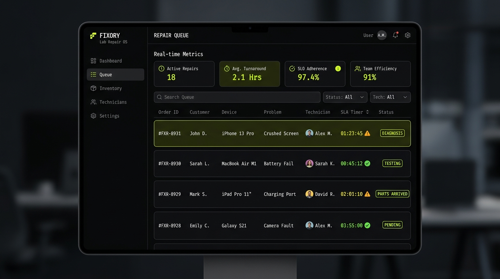
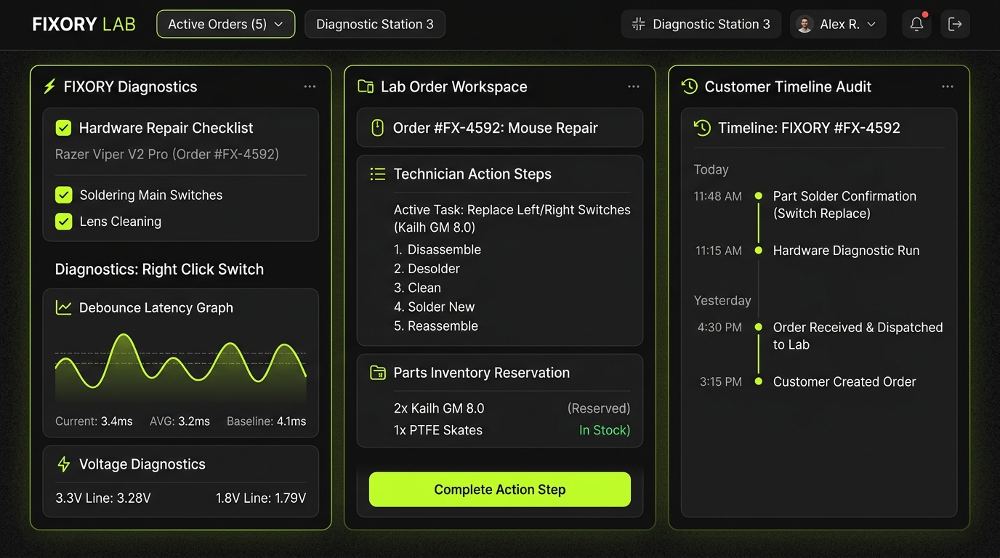

// MISSION CONTROL // OS-02 MODULE
FIXORY LAB
REPAIR OPERATING SYSTEM
Built for modern repair businesses. Managing hardware servicing shouldn't rely on paper tags, Messenger chats, and technician memory.

// PHILOSOPHICAL SHIFT
WHY OPERATING SYSTEM?
TRADITIONAL REPAIR SHOP
Customer Chat
Messenger / Memory
Order Intake
Paper Tickets / Excel
Inventory
Un-tracked Stock
Handover
Verbal / Friction
FIXORY OPERATING SYSTEM
Repair Queue
Live SLA Engine
Order Workspace
Action-driven UI
Parts Intelligence
Real-time Stock
Timeline Audit
Full Traceability
"Every order flows through a standardized operating model. Every action is traceable. Every technician follows the same workflow. Every customer experiences the same service. That's why FIXORY is designed as a Repair Operating System."

// STANDARDIZED PIPELINE
OPERATIONAL WORKFLOW
01
Check In
02
Diagnosis
03
Quotation
04
Repair
05
HW Test
06
QC
07
Delivery
// SYSTEM CAPABILITIES
SYSTEM MODULES
MODULE 01
● LIVE SLA
Repair Queue
Real-time technician assignment & SLA countdowns.
26
Active Orders In Queue
MODULE 02
● ACTIVE
Order Workspace
Action-driven interface for technicians & bench diagnostics.
13m
Average Diagnostic SLA
MODULE 03
● SYNCED
Inventory Intelligence
Parts tracking for micro-switches, encoders & modding stock.
98%
Parts Availability Rate
MODULE 04
● PUBLIC
Knowledge Base
Public repair encyclopedia & custom modding guides.
142
Published Repair Specs
// CORE RULES
DESIGN PRINCIPLES
Workflow before CRUD
One Screen. One Question.
Action Driven.
Repair is traceable.
AI assists. Humans decide.
// STRATEGIC TIMELINE
DEVELOPMENT ROADMAP
2026 // Core OS
████████████ 100%
2027 // Automation
████████ 70%
2028 // Customer Platform
████ 35%
2029 // Enterprise
□ PLANNED
EXPLORE OTHER OS MODULES IN THE SUITE